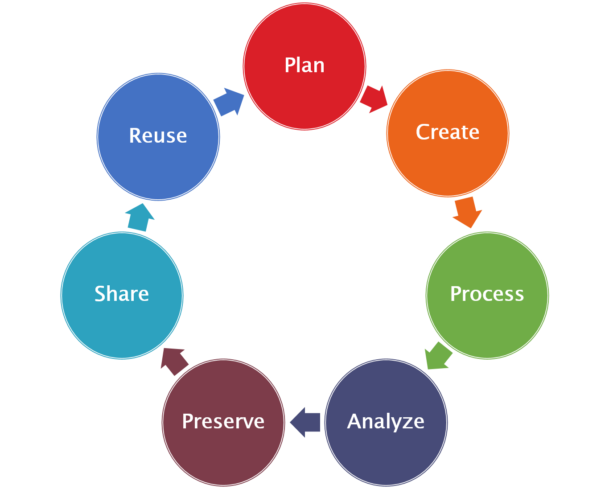

Data Input and Output
Contents
Data Input and Output¶
The main application of Python or any other programming language in your future career will be the processing and analysis of data.
import numpy as np
import netCDF4 as nc
import matplotlib.pyplot as plt

You will use both self-collected (simulations, measurements) and already existing data. To share and to make data available is therefore a key element of scientific practice. Already when processing self-collected data, you should therefore keep in mind to describe them completely with their metadata. Metadata is data about data, such as the units of the measured quantities, details about factors influencing the data or contact details. Without the metadata, the data itself is not interpretable.
Bad example:
0| 1| 2| 3| 4| 5| 6| 7| 8| 9|
----------------------------------------------------------
1.2| 2.34| 4.6| 2.31|567.1|45.24| 4.63|1.855| 4.2| 1.5|
Good example:
Incubator experiment No. 3456
Date: 13.03.2018
Contact: Martin Claus <mclaus@geomar.de>
Bacteria: Escherichia coli
Substrate: Agar plates
Cultivation: 10 days following Aaronson et al. (2017)
temperature [°C] | 0| 1| 2| 3| 4| 5| 6| 7| 8| 9|
-----------------------------------------------------------------------------
growth rate [1/day]| 1.2| 2.34| 4.6| 2.31|567.1|45.24| 4.63|1.855| 4.2| 1.5|
The data in both example are the same. However, the bad example is not understandable and interpretable for anybody who was not involved in the experiment.
Data format¶
The data format declares the way, how data is structured and how it should be interpreted when processed. Generally one can classify as
Self-describing data formats: the datasets contain both the data and their metadata
Non-self-describing data formats: the metadata is separated from the actual data
Further one can classify by the storage format of the actual data:
Binary data formats: Data is saved in binary form as they are represented in the memory. The respective type of the data (e.g. 64 byte float or 8 byte integer) is part of the metadata and needs to be known.
Text-based data formates: The information is encoded as text characters, e.g. using ASCII or UTF-8. The encoding and structure of the data is part of the metadata and must be known.
Generally it is advisable to use self-describing data formats, because they can be shared easily and are self-containing. If you use non-self-describing data formats, the metadata that is necessary to correctly interpret the data must be provided separately and may get lost.
In the following we will have a closer look on two very common data formats:
CSV¶
As an example we use the Hurrel North Atlantic Oscillation Index (station based). The content of this text-file has the following structure:
!head -n 5 ../../data/nao_station_monthly.txt
!echo ...
!tail -n 5 ../../data/nao_station_monthly.txt
Hurrell Station-Based Monthly NAO Index
year Jan Feb Mar Apr May Jun Jul Aug Sep Oct Nov Dec
1865 -0.6 -1.2 0.2 -0.2 -0.4 0.0 0.5 1.5 1.8 -2.0 -0.9 0.8
1866 0.5 0.8 -0.6 -2.3 -2.0 0.9 -0.5 -0.2 2.4 -0.3 -0.5 0.2
1867 -3.5 1.1 -4.3 1.8 -4.2 0.1 -2.0 1.9 1.4 2.2 -3.5 -0.1
...
2015 3.5 2.4 3.1 -0.1 1.9 -0.7 -2.3 1.0 -1.6 -0.6 2.7 0.8
2016 0.0 2.4 1.4 -1.7 -0.8 -0.2 0.4 0.2 2.8 -1.2 1.0 0.9
2017 -0.4 1.2 1.5 -1.0 -2.4 1.4 1.8 0.3 2.3 0.7 -1.2 0.8
2018 2.4 0.9 -1.0 1.2 -999. -999. -999. -999. -999. -999. -999. -999.
The structure of the data is the following:
2 Headlines
13 columns (year, Jan., Feb., …)
missing values are marked by
-999.
To load the data into memory, we can use the function numpy.genfromtxt. If we do not have any missing values we can alternatively use numpy.loadtxt.
data = np.genfromtxt(
'../../data/nao_station_monthly.txt',
skip_header=2,
missing_values='-999.',
usemask=True
)
print(data)
[[1865.0 -0.6 -1.2 ... -2.0 -0.9 0.8]
[1866.0 0.5 0.8 ... -0.3 -0.5 0.2]
[1867.0 -3.5 1.1 ... 2.2 -3.5 -0.1]
...
[2016.0 0.0 2.4 ... -1.2 1.0 0.9]
[2017.0 -0.4 1.2 ... 0.7 -1.2 0.8]
[2018.0 2.4 0.9 ... -- -- --]]
Tip
The parameter missing_values may be given for all data or for individual columns. The values matching the missing_value string are by default replaced with the value of the filling_values argument. To actually mask the missing values, we need to pass usemask=True.
The result of numpy.genfromtxt is a 2D numpy array or MaskedArray that contains all the numerical values of the table in the file.
NETCDF¶
NetCDF is a data format for array-based, multidimensional, binary data. It is self-describing. NetCDF is also a collection of libraries and tools to open and work with NetCDF files. NetCDF is the standard data format for data exchange and archiving in many scientific disciplines, such as earth system science, computational fluid dynamics, plasma physics, astrophysics and many more.
Structure of a NetCDF data set¶
To display the content or the structure of a NetCDF data set, the command ncdump can be used in the linux command line.
!ncdump -h ../../data/CRUTEM.4.6.0.0.anomalies.nc
netcdf CRUTEM.4.6.0.0.anomalies {
dimensions:
latitude = 36 ;
longitude = 72 ;
time = UNLIMITED ; // (2029 currently)
field_status_string_length = 1 ;
variables:
float latitude(latitude) ;
latitude:standard_name = "latitude" ;
latitude:long_name = "latitude" ;
latitude:point_spacing = "even" ;
latitude:units = "degrees_north" ;
latitude:axis = "Y" ;
float longitude(longitude) ;
longitude:standard_name = "longitude" ;
longitude:long_name = "longitude" ;
longitude:point_spacing = "even" ;
longitude:units = "degrees_east" ;
longitude:axis = "X" ;
float time(time) ;
time:standard_name = "time" ;
time:long_name = "time" ;
time:units = "days since 1850-1-1 00:00:00" ;
time:calendar = "gregorian" ;
time:axis = "T" ;
float temperature_anomaly(time, latitude, longitude) ;
temperature_anomaly:long_name = "temperature_anomaly" ;
temperature_anomaly:units = "K" ;
temperature_anomaly:missing_value = -1.e+30f ;
temperature_anomaly:_FillValue = -1.e+30f ;
temperature_anomaly:reference_period = 1961s, 1990s ;
char field_status(time, field_status_string_length) ;
field_status:long_name = "field_status" ;
// global attributes:
:title = "CRUTEM4 temperature anomalies" ;
:institution = "Climatic Research Unit, University of East Anglia/Met Office Hadley Centre" ;
:history = "" ;
:source = "" ;
:comment = "" ;
:reference = "Jones, P. D., D. H. Lister, T. J. Osborn, C. Harpham, M. Salmon, and C. P. Morice (2012), Hemispheric and large-scale land-surface air temperature variations: An extensive revision and an update to 2010, J. Geophys. Res., 117, D05127, doi:10.1029/2011JD017139" ;
:version = "CRUTEM.4.6.0.0" ;
:Conventions = "CF-1.0" ;
}
From this output the general structure of a data set becomes apparent:
Dimensions have a name and a length. To add coordinates to a dimension, variables with the same name may exist.
Variables have
a data type (float, char, int)
a name
a shape, defined by a tuple of dimensions
attributes
The actual data is stored as variables.
Global attributes
All attributes have a name, a data type and a value.
Note
Default names and values of attributes and variables for climate related data sets are defined in the Climate and Forecast Metadata Conventions (CF conventions). By following the CF conventions, data sets become machine interpretable. For example, a geospatially referenced data set is automatically plotted on a map with coastlines by the software ncview.
Now we will open the data set with the netCDF4 package, by creating an object of the class netCDF4.Dataset. We can inspect the structure of the data set by printing the object.
ds = nc.Dataset('../../data/CRUTEM.4.6.0.0.anomalies.nc')
print(ds)
<class 'netCDF4._netCDF4.Dataset'>
root group (NETCDF3_CLASSIC data model, file format NETCDF3):
title: CRUTEM4 temperature anomalies
institution: Climatic Research Unit, University of East Anglia/Met Office Hadley Centre
history:
source:
comment:
reference: Jones, P. D., D. H. Lister, T. J. Osborn, C. Harpham, M. Salmon, and C. P. Morice (2012), Hemispheric and large-scale land-surface air temperature variations: An extensive revision and an update to 2010, J. Geophys. Res., 117, D05127, doi:10.1029/2011JD017139
version: CRUTEM.4.6.0.0
Conventions: CF-1.0
dimensions(sizes): latitude(36), longitude(72), time(2029), field_status_string_length(1)
variables(dimensions): float32 latitude(latitude), float32 longitude(longitude), float32 time(time), float32 temperature_anomaly(time,latitude,longitude), |S1 field_status(time,field_status_string_length)
groups:
All the data and metadata of the data set are available as an attribute of the data set object. The most important attributes are dimensions and variables.
The dimensions attribute is a dictionary mapping the dimension names on objects of the class Dimension. These objects can be used to access all relevant metadata and data related to the dimensions of the data set.
print(ds.dimensions["time"].name)
print(ds.dimensions["time"].size)
print(ds.dimensions["time"].isunlimited())
time
2029
True
The variables attribute is a dictionary mapping the variable names on objects of the class Variable. These are used to read or write data and to access the attributes of a variable.
print(ds.variables['temperature_anomaly'].dtype)
print(ds.variables['temperature_anomaly'].name)
print(ds.variables['temperature_anomaly'].dimensions)
print(ds.variables['temperature_anomaly'].long_name)
print(ds.variables['temperature_anomaly'].units)
print(ds.variables['temperature_anomaly'].missing_value)
float32
temperature_anomaly
('time', 'latitude', 'longitude')
temperature_anomaly
K
-1e+30
The global attributes are available as attributes of the data set object, e.g.
print(ds.reference)
Jones, P. D., D. H. Lister, T. J. Osborn, C. Harpham, M. Salmon, and C. P. Morice (2012), Hemispheric and large-scale land-surface air temperature variations: An extensive revision and an update to 2010, J. Geophys. Res., 117, D05127, doi:10.1029/2011JD017139
Reading data¶
To read data from a variable into the memory, we simply have to index or slice the variable object. To access the last time step of the variable temperature_anomaly we have to do the following
t_anom = ds.variables["temperature_anomaly"][-1, :, :]
plt.pcolormesh(
ds.variables['longitude'][:],
ds.variables['latitude'][:],
t_anom
);
print(t_anom)
[[-- -- -- ... -- -- --]
[-- -- -- ... -- -- --]
[-- -- -- ... -0.800000011920929 -- --]
...
[-- -- -- ... -- -- --]
[-- -- -- ... -- -- --]
[-- -- -- ... -- -- --]]
We can see that missing values are masked automatically. Sometimes the data in the binary format is scaled and has an offset to increase the precision of the numerical representation. These transformations are also applied automatically when reading the data into memory.
Writing of NetCDF data sets¶
NetCDF Data sets are easily read but writing them is a little bit more cumbersome. The following steps are necessary to create a complete NetCDF data set:
Create a data set object and set the global attributes:
ds = nc.Dataset('test.nc', mode='w') ds.contact = 'Martin Claus <mclaus@geomar.de>' ds.description = 'Zonally averaged surface temperature from NCEP Reanalysis' ds.data_source = 'https://www.esrl.noaa.gov/psd/data/gridded/data.ncep.reanalysis.html' ds.creation_date = '16-06-2019'
Warning
If the mode parameter of
nc.Datasetis set towa new file is created. An existing file with the same name will be deleted. Other modes area,r+andr. See the documentationCreate the dimensions:
ds.createDimension('latitude', 20) ds.createDimension('time', None) # unlimited dimension
Create the variables:
lon = ds.createVariable('latitude', 'f8', dimensions=('latitude',)) time = ds.createVariable('time', 'f8', dimensions=('time',)) t = ds.createVariable('temperature', 'f8', dimensions=('time', 'longitude')
Write variable data and set their attributes
lon[:] = np.linspace(-80., 80., 20.) lon.units = "degrees_north" lon.long_name = "Latitude" time.units = 'days since 2012-01-01 00:00' time.calendar = 'gregorian' time.long_name = 'Time' t.units = 'degC' t.long_name = 'zonally averaged temperature' # write timestamp and data time[0] = 0. t[0, :] = ...
Close the data set
Only now the data will be written to disk.
ds.close()